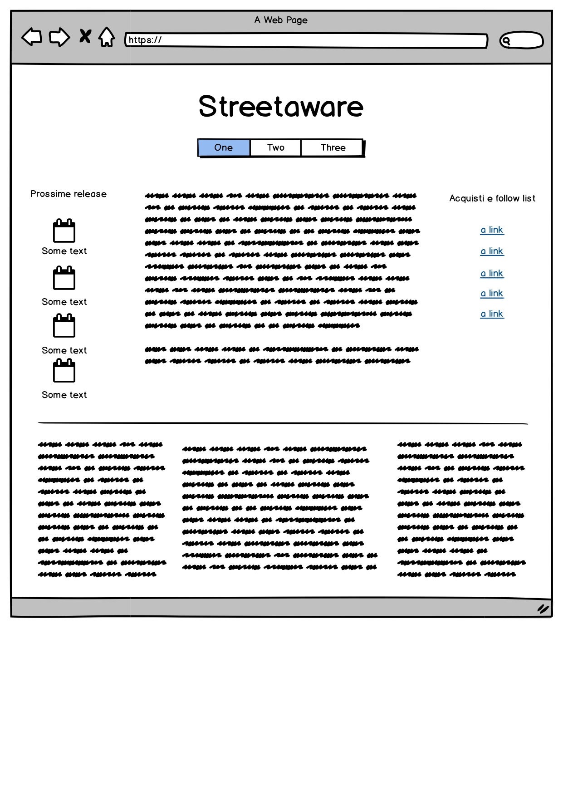
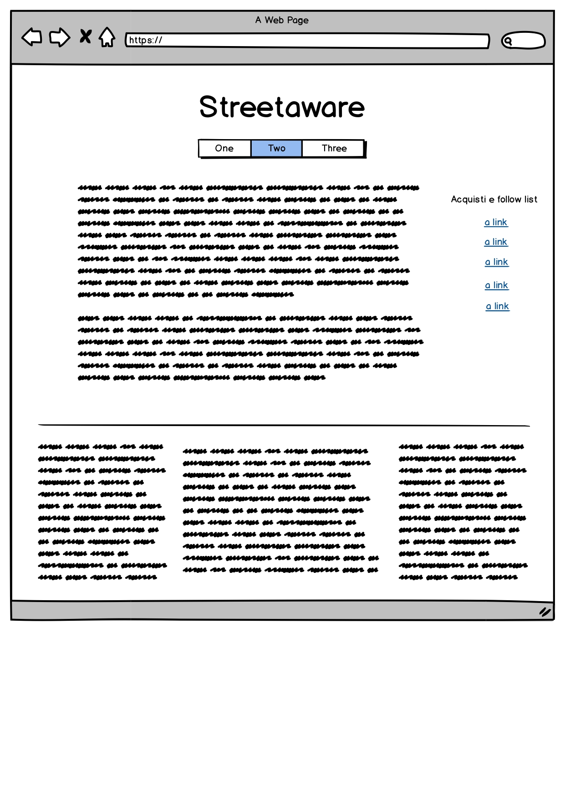
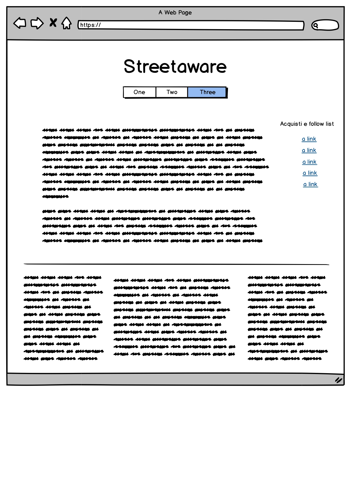

Benchmarking
I principali competitors presenti online sono Esquire Italia e Outpump.
Per quanto riguarda il primo, riteniamo di focalizzarci su un tema decisamente più specifico, sebbene con un metodo simile, improntato alla redazione di una sorta di "rivista" specializzata nella moda streetwear. Outpump è il sito che più si avvicina al nostro per quanto riguarda le tematiche e il target. Tuttavia, abbiamo cercato di discostarci da quest'ultimo affiancando alle tematiche più attuali un bagaglio di informazioni storiche, espresse nel modo più lineare possibile, che riteniamo fondamentali per il raggiungimento dell'obbiettivo comunicativo.
Struttura e layout
L'architettura del sito si presenta come una semplice diramazione che si sviluppa dalla Homepage ad ulteriori due pagine. La pagina di documentazione è linkata in fondo ad ognuna di esse. Per la costruzione grafica del sito siamo partiti dal template offertoci da Templated.com, apportando in seguito diverse modifiche a logo, banner, layout delle pagine secondarie, margini, collegamenti ipertestuali, immagini e disposizione testuale. Non siamo intervenuti sui colori di background e testi, poiché ritenuti già adatti alla navigazione.
  Linguaggi e strumenti
I linguaggi utilizzati su cui siamo intervenuti sono HTML e CSS. Ci siamo inoltre avvalsi del supporto di Fontawesome.com per elementi integrativi quali le icone, già comunque ricompresi nel foglio di stile predisposto dal template. La pubblicazione è stata effettuata tramite Github.com.
Communication Strategy
Riteniamo che le scelte operate possano portare una maggiore e migliore informazione sul tema trattato. Nel tentativo di raggiungere un ampio bacino d'utenza, utilizziamo un linguaggio semplice e comprensibile anche da chi non sia avvezzo alle tematiche. Il motivo che ci ha spinto a muoverci in tal senso è proprio la disinformazione riscontrata direttamente in casi in cui persone interessate al mondo streetwear hanno subito truffe o sono comunque state informate erroneamente da terzi a proposito di capi acquistati ed indossati quotidianamente: questo fenomeno potrebbe facilmente essere arginato da un'informazione semplice, accessibile e di qualità. Il principale limite che si riscontra in Italia consiste proprio nel fatto che il fulcro della moda street abbia sede oltreoceano: trattandosi peraltro, almeno nel nostro Paese, di una "nicchia" del settore della moda, muoversi tra i siti web già presenti può risultare difficoltoso, soprattutto per i più giovani non ancora abituati ad assimilare contenuti espressi in lingua inglese. La nostra chiave è quindi la chiarezza nell'esposizione e la semplicità dei contenuti espressi. Ci auguriamo di aver gettato le basi per un progetto che muova in questo senso.
Il sito si prefigge di raggiungere un target di utenza compreso indicativamente tra i 15/16 e i 30 anni. L'argomento interessa infatti un'ampia fascia d'età: nel nostro Paese sono molti i giovanissimi appassionati di streetwear impegnati nell'acquisto e nella rivendita di pezzi d'abbigliamento online. Il nostro obiettivo ideale sarebbe quello di aiutare più persone possibile ad incrementare la consapevolezza sull'argomento, con spunti che riteniamo importanti per procedere anche ad ulteriori approfondimenti autonomi. L'utente casuale-tipo potrebbe invece essere, ad esempio, il genitore che si è sentito chiedere dal proprio figlio minorenne una scarpa da 250 euro in regalo per Natale.
Promozione
La promozione del sito è avvenuta attraverso post su Facebook e passaparola. Al momento abbiamo avuto un riscontro positivo soprattutto da chi era già interessato alle tematiche da noi trattate. Per raggiungere più persone ci muoveremo condividendo il sito all'interno dei gruppi Facebook e Telegram (social molto utilizzato dalle community appassionate di streetwear), magari aprendoci a nuovi canali social.